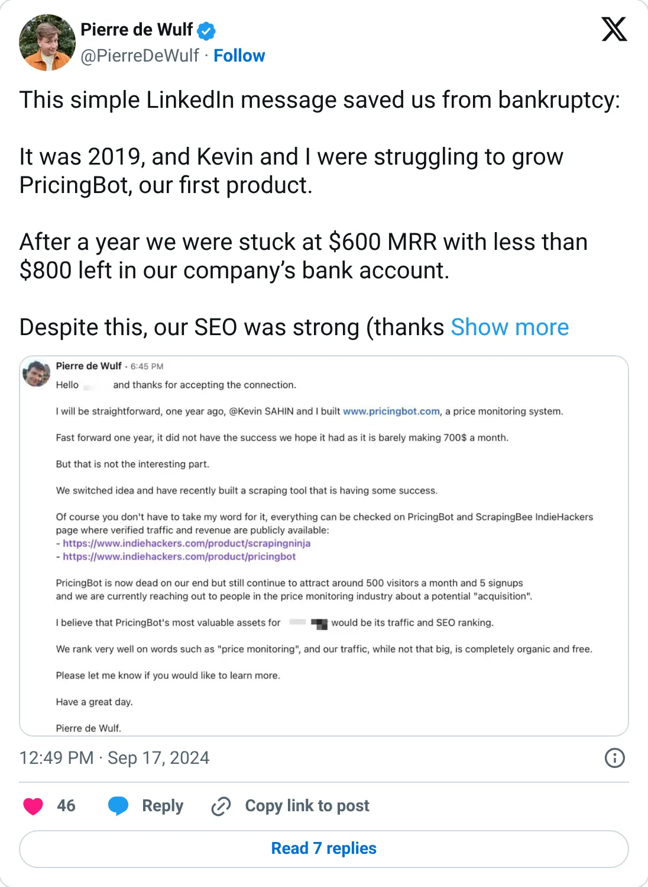
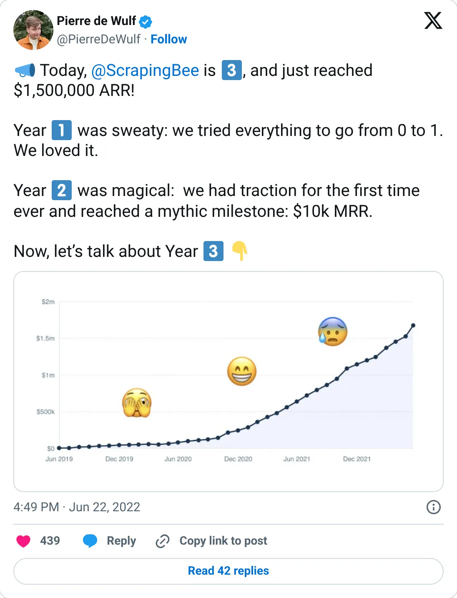
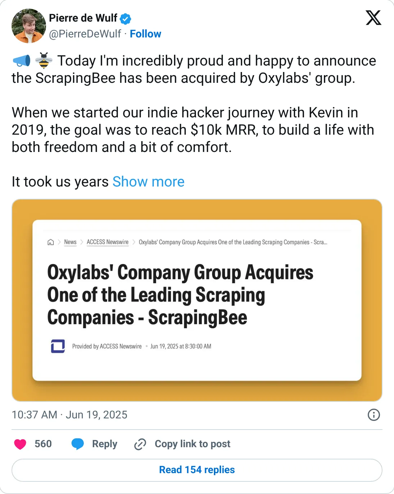

Not a pick
ScrapingBee
A real-looking company with a headline you should not plan against.
$1.5M ARR (Jun 2022) · acquired by Oxylabs (2025)
Should you build this
The company may be real. The figure on the card is a peak, a stale year, a cash month, or an average. ScrapingBee was acquired by Oxylabs in June 2025, and the founder describes an eight-figure exit. That is a real outcome. The revenue figure this report ranks is a single post from June 22, 2022: $1.5M ARR after three years. There is no public number between the ARR post and the sale. An old ARR frozen next to an exit is how a stale metric keeps a high rank.
Cited from the captured posts, shown below: the earliest captured post (Sep 17, 2024) is the source for “Looking back: 2019 PricingBot stuck at $600 MRR, under $800 in the bank”; the milestone (Jun 22, 2022) is the source for “3 years in: $1.5M ARR”; the latest milestone (Jun 19, 2025) is the source for “Acquired by Oxylabs (founder bio: exited for 8 figures)”.
Posts this is based on

Looking back: 2019 PricingBot stuck at $600 MRR, under $800 in the bank
Open on X

3 years in: $1.5M ARR
Open on X

Acquired by Oxylabs (founder bio: exited for 8 figures)
Open on X
What the product is
Web-scraping API that handles headless browsers, proxies and CAPTCHAs, so developers can extract data with one call.
⚠ Exited: acquired by Oxylabs (Jun 2025). Last ARR figure is from 2022.